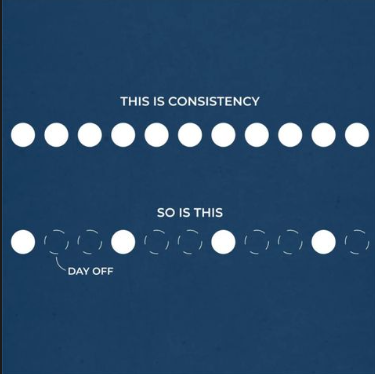

- Dedicated and Focused activity related to your Skill
- Consistency
- Voluntary relaxation
Simply you need to pracice your craft. For at least 1-4 hours each day. High quality human cognition is a limited and scarce resource. During the span of the day, you only get so much of it. Beginners can expect anywhere from half and hour to a full hour of dedicated attention while more experienced skill builders will find themselves with 3-4 hours of high quality attention. An understanding of this resource is crucial in order to avoid wasting too much time in the beginning of your skill building journey, or simply falling into the victim-hood mentality of saying "I'm not good/smart enough to master this skill". Every body who can survive is by definition "smart". They know how to solve problems, otherwise it wouldn't be possible to survive for too long. If you are here reading this, chances are you are already good at survival and thus that means you have everything you need to get started. Begin at once to establish a habit where at a set time in the day, you sit or execute whatever is required in your skill. If you are a coder, it means writing some code that builds something. If you are learning an instrument, it means spending time with your instrument. But remember that in the beginning and for long after that it may happen that you just don't have the cognitive resources to stick with it long enough. That's fine, it gets better as you do it. The second point is Consistency. To illustrate this point I like this picture:  The third and probably the most underrated and crucial, is voluntary relaxation. It is my experience that after you do an activity for 1-2 hours, you must schedule an appointment with yourself, where, depending on your energy level you must either relax, meditate, take a nap, listen to soothing music, go out for a walk, go by a lake to take in the fresh air, or do anything that is less of a cognitive load than what you just experienced while doing your skill related activity. If the skill activity is like the crest of a wave, this part is the trough. Consistency, is the wavelength.